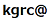

日時：2018年8月7日(火)10:00-12:00（9:30開場）
会場：国立情報学研究所（12階会議室）
参加費：無料
※参加申し込みは不要です．直接，会場にお越しください．
「ナレッジグラフ推論チャレンジ（http://challenge.knowledge-graph.jp）」は， 人工知能学会セマンティックウェブとオントロジー（SWO）研究会が主催する， 『説明能力（解釈可能性）』をもったAI技術の開発・促進を図ることを目的とした コンテストです．
チャレンジの対象とする課題（タスク）は， 『シャーロック・ホームズのような「推理（推論）」ができるAI技術』の開発です．
具体的には，
・ホームズの短編小説『まだらのひも』の内容を基に作成した「ナレッジグラフ」を情報源として，
・与えられた事実（情報）に基づき，事件の犯人を正しく突き止め，
・その理由（証拠，トリック，etc.）を適切に説明する
技術を競います，
このイベントでは，上記のタスクを実施するために必要となる技術情報を紹介します．
「ナレッジグラフ推論チャレンジ」への応募を考えておられる方のみならず，
ナレッジグラフの構築・利用に関心をお持ちの方のご参加をお待ちしております．
09:30 開場
10:00 オープニング
10:05 ナレッジグラフ推論チャレンジの紹介
：本チャレンジの開催趣旨，応募要領について説明します
10:15 提供するナレッジグラフの説明
：本チャレンジの課題（タスク）向けに提供するナレッジグラフのスキーマ，データ内容についての説明します
10:35 ナレッジグラフ利用技術の紹介
：ナレッジグラフの処理に利用できるツール（データベース，API，など）や関連技術（SPARQLなど）の情報を紹介します．
10:50 SPARQLによるナレッジグラフの利用例
：本チャレンジで提供するナレッジグラフを用いた
・SPARQLクエリによる簡単な推論例
・推理に必要な情報の抽出に利用できるクエリ例
を紹介します．
11:20 参考アプローチの紹介
：本チャレンジに応募にあたり参考となるアプローチ（有効と思われる技術の想定利用方法など）を紹介します．
11:35 質疑応答
12:00 終了
knowledge-graph.jp
人工知能学会・セマンティックウェブとオントロジー研究会・企画委員